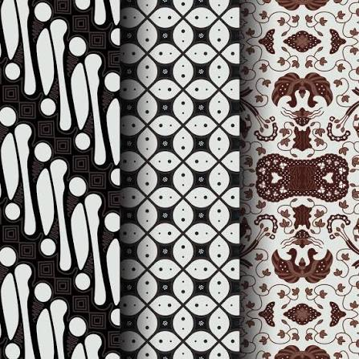

Galeri Wisata



Pesona Alam, Budaya, dan Kuliner Nusantara
Candi Buddha terbesar di dunia yang menjadi ikon wisata Jawa Tengah.
Negeri di atas awan dengan pemandangan pegunungan yang indah.
Seni pertunjukan tradisional yang terkenal di Jawa Tengah.
Tarian khas Surakarta yang anggun dan mempesona.
Kuliner khas Semarang yang terkenal hingga mancanegara.
Hidangan khas Solo yang gurih dan lezat.
